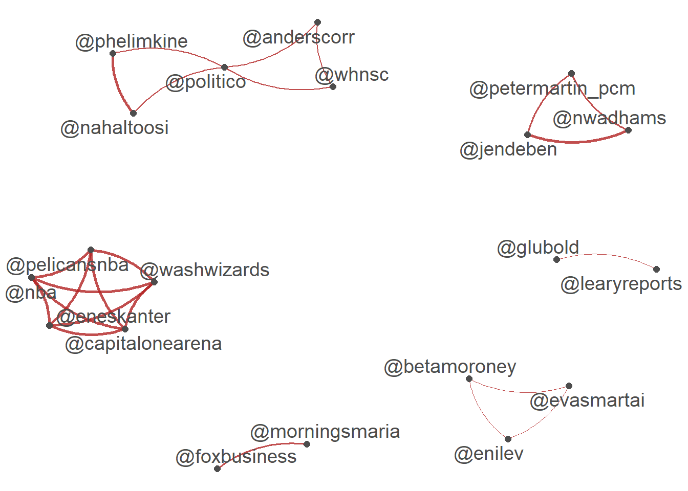
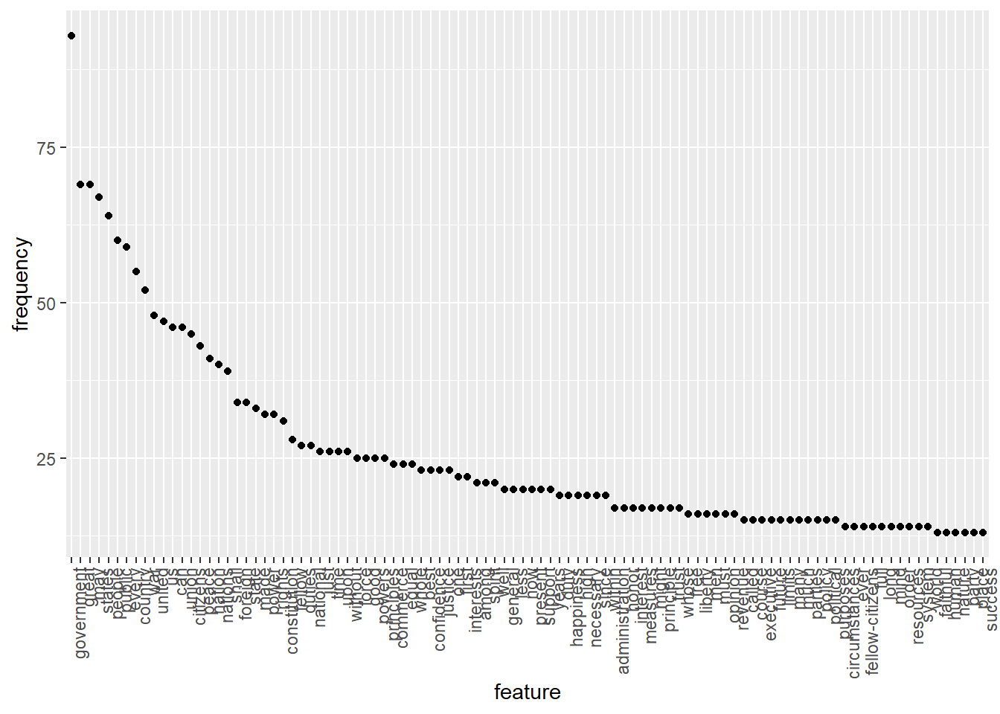
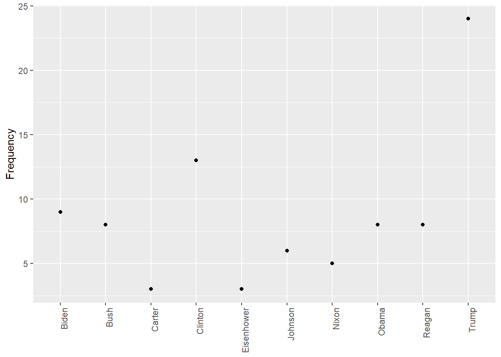
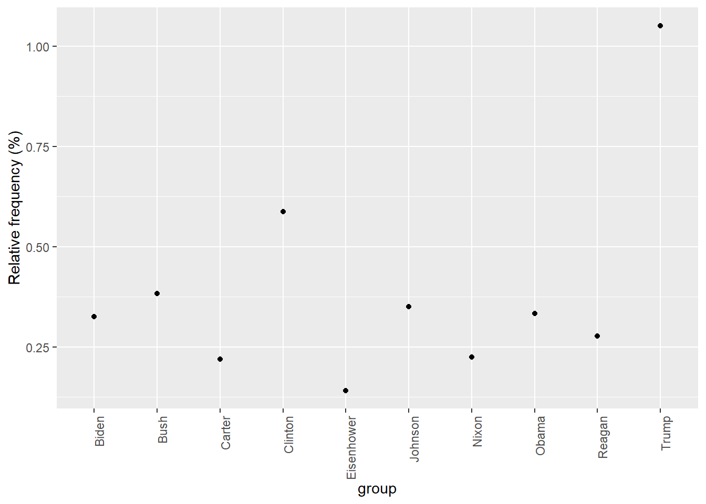
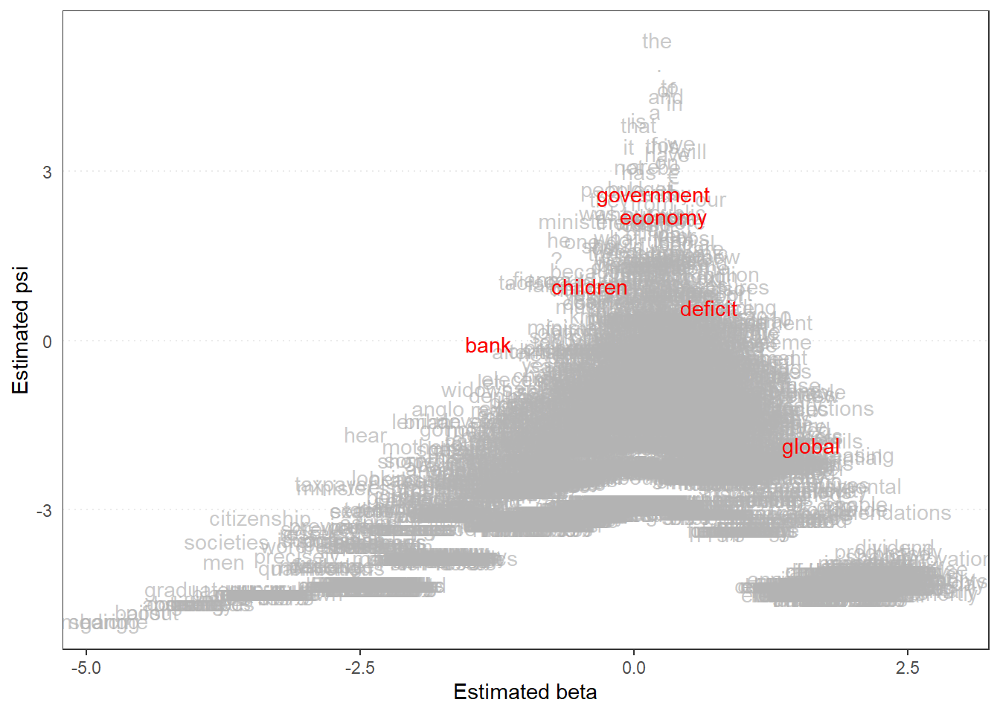

library(quanteda)
library(quanteda.textmodels)
library(quanteda.textplots)
library(readr)
library(ggplot2)Assignment 6
Text Analytics using Quanteda
This assignment demonstrates various text analytics techniques using the quanteda R package. We analyze two datasets:
- Tweets about the Biden–Xi summit in 2021
- US Presidential Inaugural Addresses
Additionally, we explore the Wordfish scaling model and its use in estimating political positions based on text data.
1. Biden–Xi Summit Twitter Data
This dataset includes tweets about the Biden–Xi summit in November 2021. We perform tokenization, Latent Semantic Analysis (LSA), and visualize hashtag and user mention networks.
Load Required Libraries
Load the Summit Tweet Dataset
summit <- read_csv("https://raw.githubusercontent.com/datageneration/datamethods/master/textanalytics/summit_11162021.csv")Rows: 14520 Columns: 90
── Column specification ────────────────────────────────────────────────────────
Delimiter: ","
chr (50): screen_name, text, source, reply_to_screen_name, hashtags, symbol...
dbl (26): user_id, status_id, display_text_width, reply_to_status_id, reply...
lgl (10): is_quote, is_retweet, quote_count, reply_count, ext_media_type, q...
dttm (4): created_at, quoted_created_at, retweet_created_at, account_create...
ℹ Use `spec()` to retrieve the full column specification for this data.
ℹ Specify the column types or set `show_col_types = FALSE` to quiet this message.sum_twt <- summit$textLatent Semantic Analysis
toks <- tokens(sum_twt)
sumtwtdfm <- dfm(toks)
sum_lsa <- textmodel_lsa(sumtwtdfm, nd=4, margin = c("both", "documents", "features"))
summary(sum_lsa) Length Class Mode
sk 4 -none- numeric
docs 58080 -none- numeric
features 63972 -none- numeric
matrix_low_rank 232218360 -none- numeric
data 232218360 dgCMatrix S4 Hashtag Co-occurence Network
tweet_dfm <- tokens(sum_twt, remove_punct = TRUE) %>%
dfm()
tag_dfm <- dfm_select(tweet_dfm, pattern = "#*")
toptag <- names(topfeatures(tag_dfm, 50))
tag_fcm <- fcm(tag_dfm)
topgat_fcm <- fcm_select(tag_fcm, pattern = toptag)
textplot_network(topgat_fcm, min_freq = 50, edge_alpha = 0.8, edge_size = 1)
User Mention Co-occurence Network
user_dfm <- dfm_select(tweet_dfm, pattern = "@*")
topuser <- names(topfeatures(user_dfm, 50))
user_fcm <- fcm(user_dfm)
user_fcm <- fcm_select(user_fcm, pattern = topuser)
textplot_network(user_fcm, min_freq = 20, edge_color = "firebrick", edge_alpha = 0.8, edge_size = 1)
2. US President Inaugural Speeches
In this section, we analyse US inaugural addresses using text frequency, word clouds, keyword tracking, and keyness plots.
Load and Filter Data
dfm_inaug <- corpus_subset(data_corpus_inaugural, Year <= 1826) %>%
tokens(remove_punct = TRUE) %>%
tokens_remove(stopwords('english')) %>%
dfm() %>%
dfm_trim(min_termfreq = 10)Word Cloud: Early Presidents
set.seed(100)
textplot_wordcloud(dfm_inaug)
Word Cloud: Trump, Obama, Bush Comparison
corpus_subset(data_corpus_inaugural,
President %in% c("Trump", "Obama", "Bush")) %>%
tokens(remove_punct = TRUE) %>%
tokens_remove(stopwords("english")) %>%
dfm() %>%
dfm_group(groups = President) %>%
dfm_trim(min_termfreq = 5) %>%
textplot_wordcloud(comparison = TRUE)
Keyword Timeline Plot
data_corpus_inaugural_subset <- corpus_subset(data_corpus_inaugural, Year > 1949)
textplot_xray(
kwic(tokens(data_corpus_inaugural_subset), pattern = "american"),
kwic(tokens(data_corpus_inaugural_subset), pattern = "people"),
kwic(tokens(data_corpus_inaugural_subset), pattern = "communist")
)
Most Frequent Terms
library(quanteda.textstats)
features_dfm_inaug <- textstat_frequency(dfm_inaug, n = 100)
features_dfm_inaug$feature <- with(features_dfm_inaug, reorder(feature, -frequency))
ggplot(features_dfm_inaug, aes(x = feature, y = frequency)) +
geom_point() +
theme(axis.text.x = element_text(angle = 90, hjust = 1))
Term Frequancy Over Time: “American”
freq_grouped <- textstat_frequency(dfm(tokens(data_corpus_inaugural_subset)),
groups = data_corpus_inaugural_subset$President)
freq_american <- subset(freq_grouped, feature == "american")
ggplot(freq_american, aes(x = group, y = frequency)) +
geom_point() +
xlab(NULL) +
ylab("Frequency") +
theme(axis.text.x = element_text(angle = 90, hjust = 1))
Relative Frequancy of “American”
dfm_rel_freq <- dfm_weight(dfm(tokens(data_corpus_inaugural_subset)), scheme = "prop") * 100
rel_freq <- textstat_frequency(dfm_rel_freq, groups = dfm_rel_freq$President)
rel_freq_american <- subset(rel_freq, feature == "american")
ggplot(rel_freq_american, aes(x = group, y = frequency)) +
geom_point() +
ylab("Relative frequency (%)") +
theme(axis.text.x = element_text(angle = 90, hjust = 1))
Keyness Comparison: Trump vs. Obama
pres_corpus <- corpus_subset(data_corpus_inaugural,
President %in% c("Obama", "Trump"))
pres_dfm <- tokens(pres_corpus, remove_punct = TRUE) %>%
tokens_remove(stopwords("english")) %>%
tokens_group(groups = President) %>%
dfm()
result_keyness <- textstat_keyness(pres_dfm, target = "Trump")
textplot_keyness(result_keyness)
3. Wordfish Scaling Model
The Wordfish model estimates the relative ideological positions of texts (or politicians) using word frequencies. It assumes that politicians closer in ideology will use similar language. Quanteda implements Wordfish via textmodel_wordfish().
Apply Wordfish to Irish Budget Speeches
data(data_corpus_irishbudget2010, package = "quanteda.textmodels")
ie_dfm <- dfm(tokens(data_corpus_irishbudget2010))
wf <- textmodel_wordfish(ie_dfm, dir = c(6, 5))
# Plot words on dimension
textplot_scale1d(wf, margin = "features",
highlighted = c("government", "global", "children",
"bank", "economy", "deficit"),
highlighted_color = "red")
# Plot party position
textplot_scale1d(wf, margin = "documents",
groups = data_corpus_irishbudget2010$party)